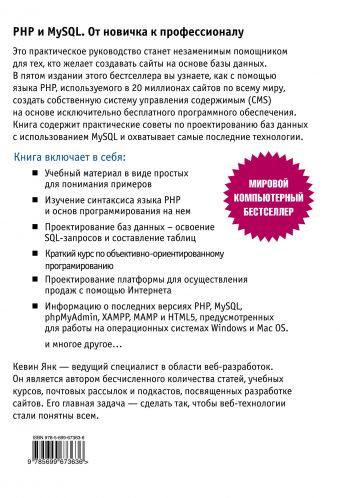
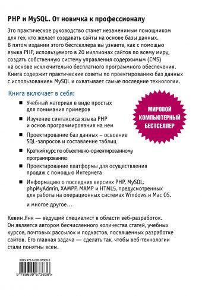

Как стать успешным в своем деле?
Все о пути будущего программиста:
PHP и MySQL. От новичка к профессионалу
Это практическое руководство станет незаменимым помощником для тех, кто желает создавать сайты на основе базы данных. В пятом издании этого бестселлера вы узнаете, как с помощью языка PHP, используемого в 20 миллионах сайтов по всему миру, создать собственную систему управления содержимым (CMS) на основе исключительно бесплатного программного обеспечения. Книга содержит практические советы по проектированию баз данных с использованием MySQL и охватывает самые последние технологии.
.jpg) 

Автор:Кевин Янк
JavaScript и jQuery. Исчерпывающее руководство.
Прочитав эту книгу вы сможете:
• Сделать свои страницы интерактивными. Используйте библиотеку jQuery для создания интерактивных элементов, реагирующих на действия посетителя.
• Освоить новейший плагин jQuery UI. Улучшайте интерфейс, используя панели с вкладками, диалоговые окна, панели для выбора дат и другие виджеты.
• Создавать удобные формы. Собирайте данные посетителей, помогайте покупателям осуществлять покупки и позволяйте участникам оставлять комментарии.
• Применять технологию Ajax. Организуйте обмен данными между веб-страницами и веб-сервером без необходимости перезагрузки страниц.
• Углубить свои знания. Используйте редактор ThemeRoller для настройки виджетов. Избегайте типичных ошибок, свойственных начинающим программистам.
Автор:Макфарланд Дэвид
Python. Программирование для начинающих
Книга «Программирование на Python для начинающих» — отличный вариант для старта. Она является подробным руководством, написанным специально для новичков, желающих освоить данный язык. Познакомившись с основами, вы перейдете к объектно-ориентированному программированию и созданию CGI-сценариев для обработки данных веб-форм, научитесь создавать графические приложения с оконным интерфейсом и распространять их на другие устройства.
С помощью данного учебника вы сможете пройти все ступени от установки интерпретатора до запуска и отладки полноценных приложений.
Автор:Майк МакГрат
Изучаем Java
Язык Java имеет крайне дружественный синтаксис, но это не значит, что разобраться в нем так уж легко. Книга «Изучаем Java» построена на визуализации и несколько отличается от классических учебников. Она имеет очень подробное изложение, массу живых примеров и упражнения для закрепления в каждом разделе. Подойдёт всем тем, кто ничего не слышал про программирование, в том числе и про объектно-ориентированное, так как Java — полностью объектно-ориентированный язык, и изучать его нужно именно в таком контексте.
В общем, «Изучаем Java» — это не только бестселлер, но и благодаря нестандартной форме обучения и подачи материала одна из лучших книг для начинающих в принципе.
Автор:Кэти Сьерра и Берт Бейтс
Программирование на С для начинающих
В этой книге с помощью примеров программ и иллюстраций, показывающих результаты работы кола, разбираются все ключевые аспекты языка С. В этой книге описано даже то. как установить бесплатный компилятор для языка С и работать в нем, – у вас просто не будет шансов ошибиться!
Книга идеально подойдет программистам, переключающимся на работу с другим языком, студентам, изучающим язык С, а также тем, кто только начинает свою профессиональную деятельность и хочет научиться основам процедурного программирования.
Автор:Майк МакГрат